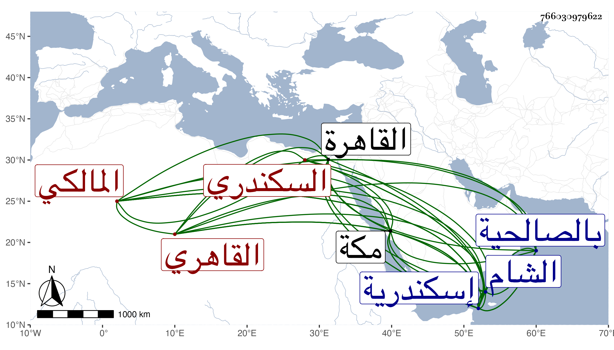

0902Sakhawi.DawLamic.ITO20230111-ara1.EIS1600.766030979622
Biography ID: 766030979622
13
محمد بن محمد بن محمد بن يحيى بن محمد البدر أبو الفتح بن ناصر الدين بن العز ابن المحيوي أبي زكريا السكندري الأصل القاهري المالكي الآتي أبوه وابنه يوسف ويعرف كسلفه بابن المخلطة بكسر اللام المشددة كما ضبطه ابن فرحون ولكنه على الألسنة بفتحها ، ويحيى جده أظنه أخو قاضي إسكندرية الفخر أبي العباس أحمد ابن محمد بن عبد الله المترجم في المائة قبلها . ولد البدر ظنا في سنة أربع وعشرين وثمانمائة بالقاهرة ونشأ بها فحفظ القرآن ومختصر ابن الحاجب الفرعي وألفية ابن ملك وغيرها وعرض على جماعة ثم أقبل على العلم فأخذ الفقه عن أبيه وأبي القسم النويري والبدر بن التنسي والزين طاهر ولازمه فيه وفي غيره وكذا لازم الشمني في الأصلين والتفسير والعربية والمعاني والبيان وغيرها ومما قرأ عليه التلخيص وشرحه المختصر والموقف الأول من المواقف في علم الكلام وأماكن في شرحه للسيد والمقصد الأول من المقاصد وشرحه ومما سمعه منه نبذة من المقصد الخامس وشرحها والمعظم من كل من المطول ومختصر ابن الحاجب الأصلي وشرحه للعضد وحاشية العضد للتفتازاني ومن أول البيضاوي إلى أتأمرون الناس بالبر وأخذ أيضا عن الشرواني وابن الهمام وابن حسان والتقي الحصني وأكثر عنهم والكثير من المنهاج الأصلي عن العلاء القلقشندي وكذا قرأ في الأصول في ابتدائه على إمام الكاملية وفي الفرائض على أبي الجود وفي العروض وغيره على الأبدي ولازم النواجي في العروض وفي أكثر فنون الأدب وانتفع به وفي العربية على الراعي والعجيسي والهندي وشرح المقامات بأخرة على الشهاب الحجازي وسمع على شيخنا والزينين ابن الطحان والأميوطي وابن بردس وابن ناظر الصاحبة والرشيدي والصالحي وسارة ابنة ابن جماعة في آخرين وهو ممن حضر قراءة البخاري في الظاهرية القديمة وكتب الخط المنسوب وعني بالأدب ولا زال يدأب حتى برع في الفنون وأذن له في التدريس والإفتاء وعظمه الأكابر كالشمني وابن الهمام وكان يعجبهما متانة تحقيقه وتدقيقه وجودة إدراكه وتأمله بحيث قال ثانيهما أنه يصح وصفه بالعالم . وحج غير مرة وجاور وسمع بمكة على التقي ابن فهد وغيره ودخل الشام وغيرها وناب في القضاء عن الولوي السنباطي فمن بعده واختص بالحسام بن حريز وقرأ عليه في الجواهر لابن شاس وغيرها وهو الذي عينه لقضاء إسكندرية عقب الجلال البكري وتلقى قبل ذلك تدريس المالكية بالمؤيدية عوضا عن العز بن البساطي وكذا ولي التدريس بأم السلطان والقمحية والإعادة بالصالحية وغيرها من الجهات وناب عن أبيه في نظر البيمارستان وشرع في شرح مختصر ابن الحاجب فكتب منه مواضع مفرقة سبكا إلى غير ذلك من التعاليق والنظم والنثر وقد كثر اجتماعنا وسمعت من فوائده وأبحاثه وسمع بقراءتي ومرافقتي أشياء وبالغ في الثناء علي لفظا وخطا وأكثر من ترغيبي في تبييض كتابي طبقات المالكية ومن التردد إلي بسبب السؤال عن تراجم جماعة منهم وطالع من تصانيفي جملة وأمعن في تقريظها بما أثبته مع غيره في ترجمته من موضع آخر وكان إماما علامة ذكيا مفننا جم الفضائل ظريفا حسن العشرة لطيف الذات وافر العقل ذا سياسة ودربة وتودد وتواضع كثير الأدب والمحاسن لم ينتدب للقضاء كأبيه بل لما توجه لقضاء إسكندرية اغتبط به أهلها وأثنوا عليه كثيرا . ولا زال كذلك إلى أن تعلل بالقولنج وشبهه وأرسل يستأذن في القدوم فأجيب وقدم وهو في غاية التوعك فلم تطل مدته بل مات بعد أيام في ليلة السبت تاسع عشر ربيع الأول سنة سبعين ودفن من الغد عند أبيه بحوش سعيد السعداء وتأسف الناس على فقده رحمه الله وإيانا .
